hist(d.ch.k$agea, col = "blue", xlim = c(0, 100), ylim = c(0, 800))
new.color <- rgb(red = 0, green = 255, blue = 0, alpha = 255/2,
maxColorValue = 255)
hist(d.ch.k$eduyrs, col = new.color, add = T)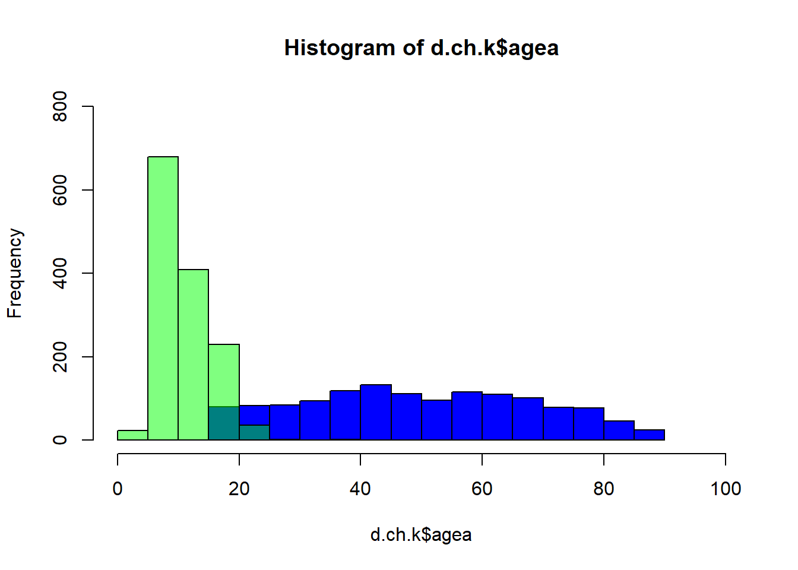
Arbeiten mit Datensätzen III: Daten erkunden
Nachdem wir in der letzten Woche drei Möglichkeiten zur Zusammenfassung von Daten angeschaut haben, probieren Sie in dieser Woche (einfache) grafische Techniken aus. Wir haben letzte Woche festgestellt, dass viele Outputs bereits über die Datenplausibilisierung hinausgehen. Wie bereits angedeutet ist der Übergang fliessend. Auch Grafiken können sowohl zur Plausibilisierung der Daten als auch zur Analyse von Daten eingesetzt werden. Wie die Grafik unter “Einführung in den Kurs” aufzeigt, liegen dazwischen immer wieder Datenaufbereitungsschritte, in denen Sie zum Beispiel Kategorien zusammenfassen.
Die Lernziele:
Do’s:
Daten
Einbindung im Text
Inhalt
Konsistenz
Standard und einfach
Kongruenz
Beschriftung
Ordnung
Farben
Don’ts:
Eindrücke nicht verzerren
Quelle: (Chen et al. 2008)
hist()-FunktionDie hist()-Funktion haben Sie in Woche 4, 5 und 6 “en passant” schon kennengelernt. Stellen Sie eine Variable mittels Histogramm dar.
hist() an. Beschreiben Sie die Argumente x, breaks, col, main, xlim, ylim, xlab und ylab.plot()-Funktion (univariat)plot()-Funktion
Diese Funktion ist zur Visualisierung von Daten vielseitig einsetzbar. Wie die table()-Funktion kann sie sowohl univariat als auch bivariat verwendet werden. Zudem können sowohl kategorial als auch numerisch kodierte Daten als Input eingehen. R passt den Grafiktyp automatisch an (solange Sie die Daten im Verlauf der Datenbereinigung korrekt kodiert haben!).
a. Sehen Sie sich die Hilfe zu plot() (vom R Base Package) an und beschreiben Sie die Argumente x, y, main, xlab, ylab und col.
b. Stellen Sie die Variable von Aufgabe 1 mit der plot()-Funktion dar. Spezifizieren Sie die vorher nachgeschlagenen Argumente sinnvoll. Was zeigt die Grafik? Weshalb ist die Darstellung von Aufgabe 1 sinnvoller?
c. Stellen Sie eine kategorial kodierte Variable mit der plot()-Funktion dar. Inwiefern ist diese Grafik sinnvoll? Was zeigt sie inhaltlich?
plot()-Funktion (bivariat)Nutzten Sie Funktion plot(), um eine bivariate Verteilung darzustellen.
plot()-Funktion noch nicht zufriedenstellend dargestellt werden können.Diese Funktionen sind nützlich, wenn Sie einem Plot entweder quasi einen weiteren Plot oder ein grafisches Element hinzufügen wollen. Mittels dem Argument add = T können zwei Verteilungen in einem Plot dargestellt werden (siehe Woche 4, Aufgabe 1, Exkurs zu grafischen Darstellungen ovn Verteilungen). Dabei ist zu berücksichtigen, dass die Farben nicht deckend sein dürfen, weil sonst ein Teil der ersten Grafik verdeckt wird. Solche Kombinationen sind mit dem ggplot2-Package einfacher zu erstellen und wir vertiefen an dieser Stelle deshalb lediglich, wie Sie einzelne grafische Elemente einer bestehenden Grafik hinzufügen. Linien können Sie mittels der Funktion abline(), Punkte mittels der Funktion points() hinzufügen.
a. Schauen Sie sich die entsprechende Hilfeseite an und fügen Sie Ihrem Streudiagramm von Aufgabe 4 eine Linie hinzu, die ungefähr den Zusammenhang der beiden Variablen widerspiegelt.
*In einem nächsten Schritt überlegen Sie sich und halten schriftlich fest, wie Sie die exakte Linie zeichnen können.
In der Legende einer Grafik wird angegeben, was die Farben (oder auch Formen, Grössen…) repräsentieren. In Base R können Legenden mit der Funktion legend() initiiert werden.
b. Schauen Sie sich die Hilfeseite der Funktion an, fügen Sie untenstehender Grafik eine Legende hinzu und beschriften Sie die Achsen. Macht die Grafik Sinn? Können Sie die Variablen sinnvoller darstellen?
hist(d.ch.k$agea, col = "blue", xlim = c(0, 100), ylim = c(0, 800))
new.color <- rgb(red = 0, green = 255, blue = 0, alpha = 255/2,
maxColorValue = 255)
hist(d.ch.k$eduyrs, col = new.color, add = T)
Repetieren Sie die Inhalte der Statistik-Vorlesung zum Thema Chi-Quadrat-Test. Falls Sie nicht teilnehmen, lesen Sie bitte das Kapitel 4.25 in “Statistik für die Soziologie” (hier über die ZHB frei zugänglich). Berechnen Sie den Chi-Quadrat-Wert mit der chisq.test()-Funktion für die Variablen aus Aufgabe 4, Woche 6 (Sie brauchen die absolute Häufigkeitstabelle!). Interpretieren Sie das Resultat.
Reflexion (bitte betiteln Sie diesen Abschnitt auch mit “Reflexion” in Ihrem Markdown-Dokument!)
Bitte reflektieren Sie und halten stichpunktartig fest:
Metrische Variablen können mittels Histogramm dargestellt werden, das sind agea, yrbrn, eduyrs oder wkhtot
| Argument | Inhalt |
|---|---|
x |
Vektor (numerisch) |
breaks |
Anzahl Balken (oder auch Funktion/Algorithmus zu deren Berechnung – in der Praxis jedoch selten benutzt) |
col |
Balkenfarbe (Füllung) |
main |
Titel des Diagramms |
xlim/ylim |
Spannweite der x-, resp. y-Achse |
xlab/ylab |
Beschriftung der x-, resp. y-Achse |
hist(d.ch.k$wkhtot, breaks = 15, col = "grey", main = "Verteilung der Wochenarbeitsstunden", xlim = c(0, 100), ylim = c(0, 500), xlab = "Wochenarbeitsstunden", ylab = "Häufigkeit")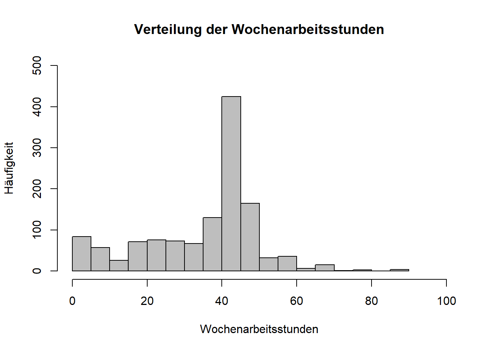
Die meisten Befragten arbeiten etwas mehr als 40 Stunden pro Woche. 42 Stunden pro Woche entspricht bei einem Beschäftigungsgrad von 100% der üblichen Arbeitszeit in der Schweiz. Vergleichsweise viele arbeiten bis zu rund 50 Arbeitsstunden pro Woche. Dies erklärt sich dadurch, dass Überstunden auch erfasst wurden. Das Maximum liegt bei 90 Stunden pro Woche, was bei einer Sieben-Tage-Woche rund 13 Stunden pro Tag und bei einer Fünf-Tage-Woche 18 Stunden pro Tag wären. Ersteres ist auf Dauerunrealistisch, kann vielleicht in äussersten Ausnahmefällen. Letzteres ist unplausibel. Unter 40 Stunden pro Woche finden sich Teilzeitpensen. Interessant wäre, sich das Histogramm nach Geschlecht anzuschauen.
par(mfrow = c(1, 2))
hist(d.ch.k$wkhtot[d.ch.k$gndr == "w"], breaks = 15, main = "Verteilung Frauen", xlim = c(0, 100), ylim = c(0, 300), xlab = "Wochenarbeitsstunden", ylab = "Häufigkeit", yaxt = "n")
axis(side = 2, at = seq(0, 300, 50), labels = seq(0, 300, 50))
hist(d.ch.k$wkhtot[d.ch.k$gndr == "m"], breaks = 15, main = "Verteilung Männer", xlim = c(0, 100), ylim = c(0, 300), xlab = "Wochenarbeitsstunden", ylab = "Häufigkeit", yaxt = "n")
axis(side = 2, at = seq(0, 300, 50), labels = seq(0, 300, 50))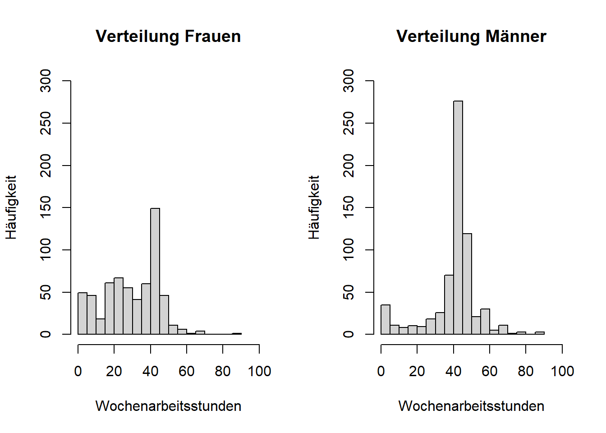
plot()–Funktion (univariat)| Argument | Inhalt |
|---|---|
x, y |
Koordinaten oder R-Objekt, das plot()-Funktion bearbeiten kann |
main |
Titel des Diagramms |
xlab, ylab |
Beschriftung der x-, resp. y-Achse |
col |
Farbe |
plot(x = jitter(d.ch.k$wkhtot), main = "Verteilung der Wochenarbeitsstunden", xlab = "Fall", ylab = "Wochenarbeitsstunden", col = "black")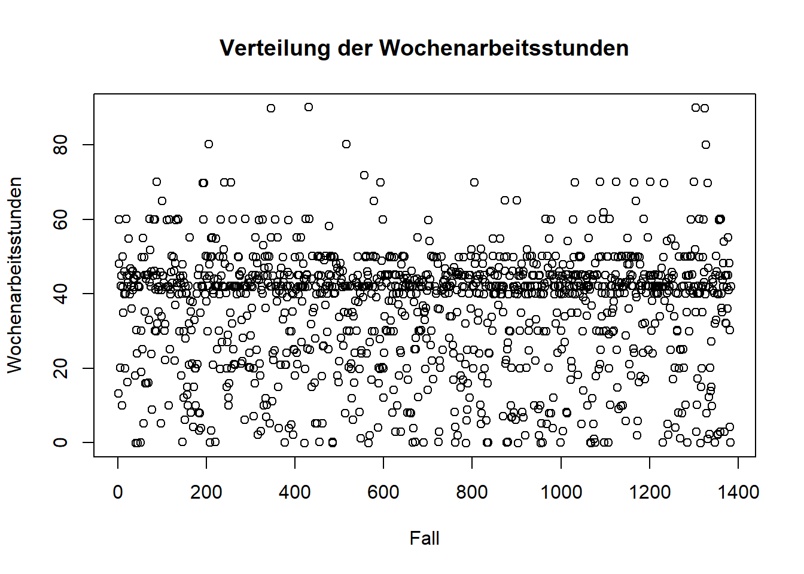
Die Grafik ist nichts sagend und sinnlos, weil man nichts erkennen kann - auch, wenn man die Punkte mit der jitter()-Funktion versetzt zeichnet.
plot(d.ch.k$gndr, ylim = c(0, 800), main = "Verteilung des Geschlechts", ylab = "Anzahl", xlab = "Geschlecht")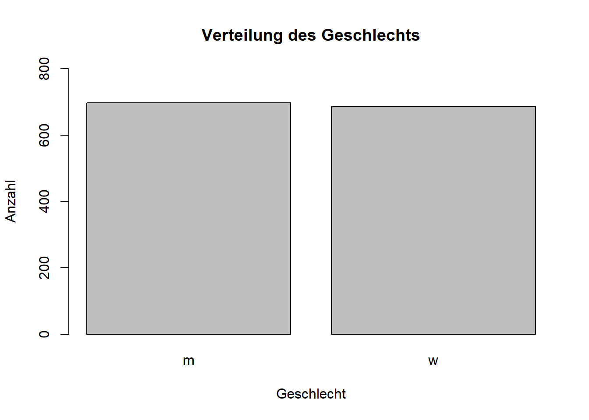
Die Grafik ist korrekt, aber inhaltlich nicht sinnvoll, weil aufgrund des Stichprobenplans das Geschlecht in der Stichprobe ungefähr gleich verteilt sein soll. Sie zeigt, wie viele der Befragten männlich, respektive weiblich angegeben haben.
plot()–Funktion (bivariat)plot(d.ch.k$gndr, d.ch.k$wkhtot, ylab = "Arbeitswochenstunden", xlab = "Geschlecht") # sinnvoll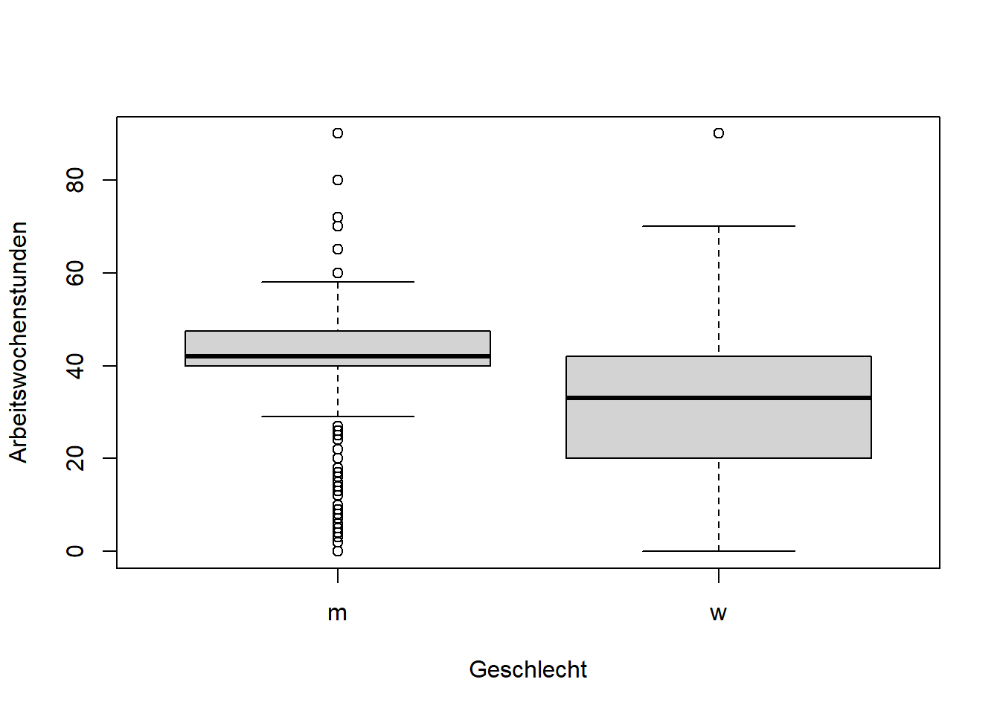
num und kat: (Streudiagramm gegen Index – nicht sinnvoll!)
plot(d.ch.k$wkhtot, d.ch.k$gndr) # num und kat -> nicht sinnvoll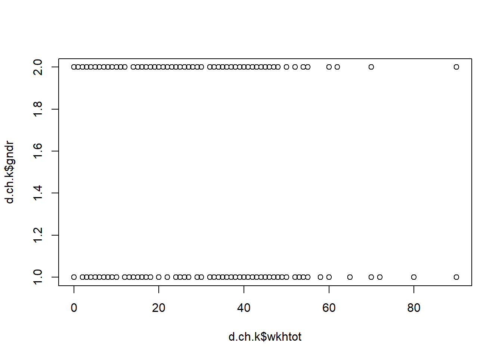
num und num: Streudiagramm
plot(jitter(d.ch.k$agea), jitter(d.ch.k$eduyrs)) # mit diesen Variablen jedoch nicht wirklich hilfreich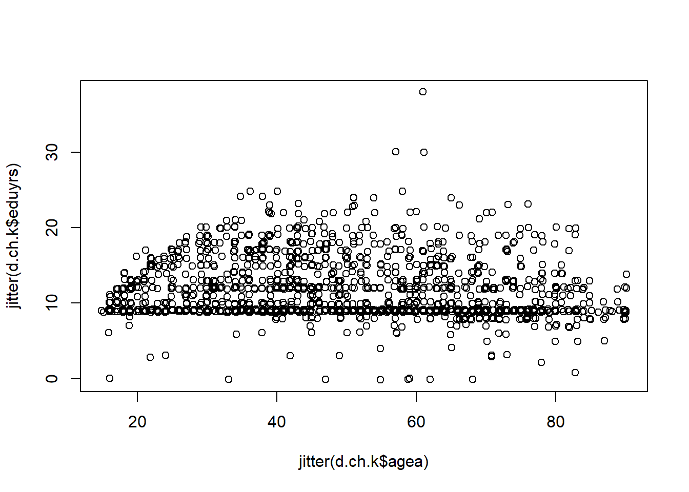
kat und kat: (“Mosaic” – nicht sinnvoll!)
plot(d.ch.k$gndr, d.ch.k$edlvdch_zf) # vergleicht Anteile Bildungslevel nach Geschlecht, allerdings gestapelte Balkendiagramme und deshalb schwer lesbar 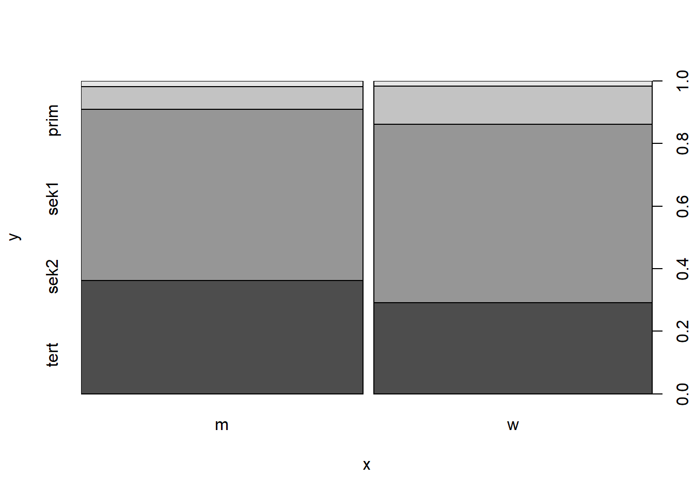
# --> lesbarer wird's so:
barplot(prop.table(table(x = d.ch.k$gndr, y = d.ch.k$edlvdch_zf), 2),
beside = T, ylim = c(0, 1), col = c("blue", "red"),
ylab = "Anteilswert",
xlab = "Bildungsniveau")
legend("topright",
legend = c("Frauen", "Männer"),
col = c("red", "blue"),
cex = 0.75,
pch = 15,
pt.cex = 1.5)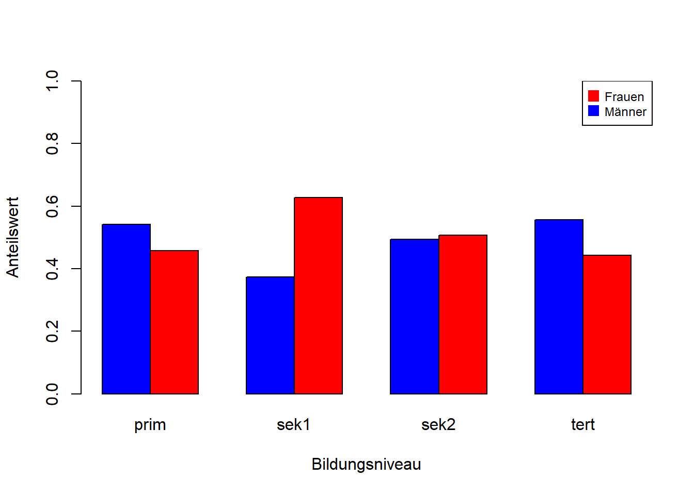
Die plot()-Funktion generiert je nach Kodierung der Variable unterschiedliche Plotarten. Deshalb ist es essentiell, dass die Variablen im Aufbereitungsskript korrekt kodiert sind!
| Plot | Interpretation |
|---|---|
| Boxplot | Die meisten befragten Männer arbeiten um die 40 Stunden pro Wochen, während Frauen eher in Teilzeitpensen arbeiten. |
| (Streudiagramm) | Bildet die Anzahl Wochenarbeitsstunden in Abhängigkeit der Bildungsjahre ab. Anhand des Plots ist keine Tendenz erkennbar. |
| Balkendiagramm (angepasst) | Es sind mehr Männer in der Stichprobe als Frauen, die angegeben haben, ein Sek1-Abschluss zu haben. Betreffend Primar- und Tertiär-Abschluss sind es mehr Frauen. Diese Daten sind allerdings schwierig zu interpretieren, weil wir nur die Stichprobe anschauen. |
…es ist nicht wirklich ein Zusammenhang erkennbar, auch wenn wir uns nur Befragte mit tertiärer Bildung anschauen…
plot(jitter(d.ch.k$agea)[d.ch.k$edlvdch_zf == "tert"], jitter(d.ch.k$eduyrs)[d.ch.k$edlvdch_zf == "tert"],
xlim = c(0, 100),
ylim = c(0, 40))
abline(h = 15, col = "red")
abline(lm(eduyrs ~ agea, data = d.ch.k[d.ch.k$edlvdch_zf == "tert", ]), col = "blue") # Regressionslinie dazu, die macht hier kein Sinn, weil kein Zusammenhang vorliegt, wie wir bereits festgestellt haben...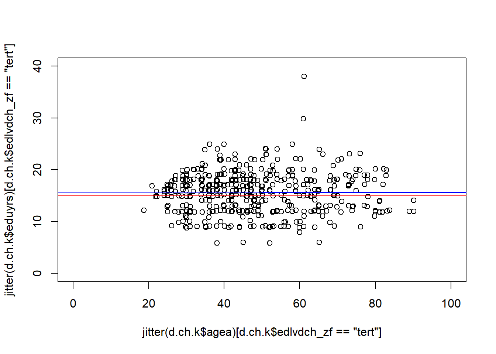
hist(d.ch.k$agea, col = "blue", xlim = c(0, 100), ylim = c(0, 800), xlab = "Jahre", ylab = "Häufigkeit", main = "Bildungs- und Altersjahre")
new.color <- rgb(red = 0, green = 255, blue = 0, alpha = 255/2,
maxColorValue = 255)
hist(d.ch.k$eduyrs, col = new.color, add = T)
legend("topright",
legend = c("Bildungsjahre", "Altersjahre"),
col = c(new.color, "blue"),
cex = 0.75,
pch = 15,
pt.cex = 1.5)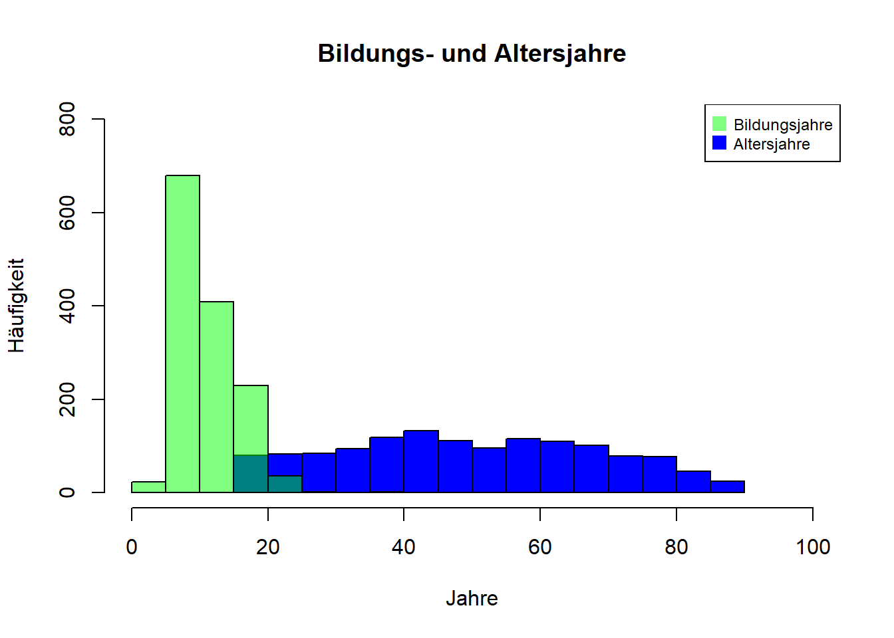
Es handelt sich um ein Histogramm der Bildungs- und Altersjahre gemeinsam in einem Plot. Auf der x-Achse sind zwar in beiden Fällen Jahre abgebildet, die Grafik macht aber nichts sichtbar. Sinnvoller ist es, sich zwei Gruppen einer der beiden Variablen anzuschauen, oder den Zusammenhang der beiden Variablen bivariat darzustellen:
plot(jitter(d.ch.k$agea), jitter(d.ch.k$eduyrs)) # man sieht nicht so viel... ausser vielleicht, dass ältere Personen weniger und "mittelalte" Befragte am meisten Bildungsjahre angeben...
abline(lm(eduyrs ~ agea, data = d.ch.k), col = "blue")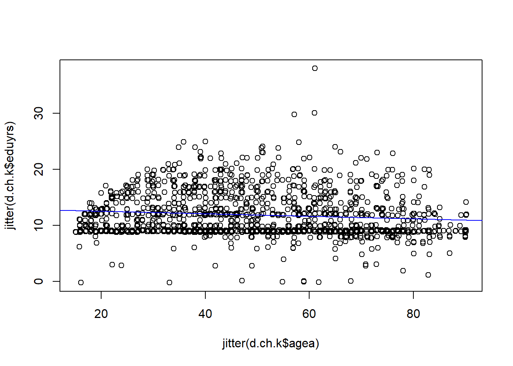
chisq.test(table(d.ch.k$gndr, d.ch.k$netusoft_zf)) # es scheint in den Stichprobendaten kein Zusammenhang zu bestehen
Pearson's Chi-squared test
data: table(d.ch.k$gndr, d.ch.k$netusoft_zf)
X-squared = 3.6516, df = 2, p-value = 0.1611# wir schauen uns das noch in der Grundgesamtheit an...
library(survey)Lade nötiges Paket: gridLade nötiges Paket: MatrixLade nötiges Paket: survival
Attache Paket: 'survey'Das folgende Objekt ist maskiert 'package:graphics':
dotchartsvy.ch <- svydesign(ids = ~psu, strata = ~stratum, weights = ~anweight,
data = d.ch.k)
svychisq(formula = ~ gndr + netusoft_zf, design = svy.ch)
Pearson's X^2: Rao & Scott adjustment
data: svychisq(formula = ~gndr + netusoft_zf, design = svy.ch)
F = 1.9621, ndf = 1.9986, ddf = 2752.0922, p-value = 0.1408# auch in der Grundgesamtheit besteht kein Zusammenhang